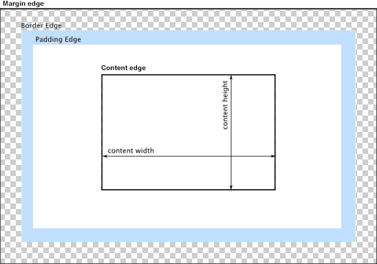

When laying out a document, the browser's rendering engine represents each element as a rectangular box according to the standard CSS basic box model. CSS determines the size, position, and properties (color, background, border size, etc.) of these boxes.
Every box is composed of four parts (or areas), defined by their respective edges: the content edge, padding edge, border edge, and margin edge.

The content area, bounded by the content edge, contains the "real" content of the element, such as text, an image, or a video player. Its dimensions are the content width (or content-box width) and the content height (or content-box height). It often has a background color or background image.
If the box-sizing property is set to content-box (default) and if the element is a block element, the content area's size can be explicitly defined with the width, min-width, max-width, height, min-height, and max-height properties.
The padding area, bounded by the padding edge, extends the content area to include the element's padding. Its dimensions are the padding-box width and the padding-box height.
The thickness of the padding is determined by the padding-top, padding-right, padding-bottom, padding-left, and shorthand padding properties.
The border area, bounded by the border edge, extends the padding area to include the element's borders. Its dimensions are the border-box width and the border-box height.
The thickness of the borders are determined by the border-width and shorthand border properties. If the box-sizing property is set to border-box, the border area's size can be explicitly defined with the width, min-width, max-width, height, min-height, and max-height properties. When there is a background (background-color or background-image) set on a box, it extends to the outer edge of the border (i.e. extends underneath the border in z-ordering). This default behavior can be altered with the background-clip css property.
The margin area, bounded by the margin edge, extends the border area to include an empty area used to separate the element from its neighbors. Its dimensions are the margin-box width and the margin-box height.
The size of the margin area is determined by the margin-top, margin-right, margin-bottom, margin-left, and shorthand margin properties. When margin collapsing occurs, the margin area is not clearly defined since margins are shared between boxes.
Finally, note that for non-replaced inline elements, the amount of space taken up (the contribution to the height of the line) is determined by the line-height property, even though the borders and padding are still displayed around the content.